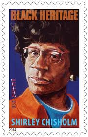
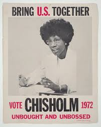

Life!
Shirley Anita St. Hill was born to immigrant parents on November 30, 1924 in New York, New York. She soon became the oldest of four girls. Both of St. Hill's parents worked a lot, so it became difficult for them to take care of their children. As a result, when St. Hill was five years old, she and her, then, two sisters were sent to Barbados to live with their maternal grandmother. While there, they were all schooled and received a very good, early education. Almost five years later, they were allowed to return to their parents in the U.S. Although, because of her upbringing in Barbados, St. Hill developed a West Indian accent she had for the rest of her life, and she always considered herself as a Barbadian American. In the late 1940's, St. Hill met Conrad Q. Chisholm, a private investigator who migrated from Jamaica. They soon got married with a big West Indian-style wedding. Unfortunately, their marriage ended in divorce in 1977, and then later that year, Chisholm married Arthur Hardwick, Jr., a former New York State Assemblyman. Hardwick was injured in an automobile accident and Chisholm retired from Congress (1982) to take care of him, he died in 1986.
Career!
While furthering her education, Chisholm taught in a nursery school, and running a daycare got her interested in politics. She became a representative of the Brooklyn branch of the National Association of College Women. Chisholm often stated that she had a "double handicap" being both a woman and black. She became a Democratic member in the New York assembly, and two of her earlier successes included arguing against the State’s literacy test requiring English, and said that just because a person “functions better in his native language is no sign a person is illiterate," and she gained unemployment benefits for domestic workers. She sponsored the introduction of SEEK (Search for Education, Elevation, and Knowledge) for disadvantaged students the chance to get accepted into college while receiving intense remedial education. In 1968, Chisholm was elected as Democratic National Committeewoman from New York state, and in that same year she ran for the U.S. House of Representatives with the campaign slogan "Unbought and Unbossed." In the general election, she staged an upset victory against James L. Farmer, Jr., and then was upsettingly assigned to House Agricultural Committee. After Chisholm voiced her disappointment about her assignment to Rabbi Menachem M. Schneerson, he suggested she used the surplus food for the less fortunate. She then met Robert Dole and worked to expand the food stamp program, and later played a critical role in the creation of the Special Supplemental Nutrition Program for Women, Infants, and Children (WIC) program. Then she was placed on the Veteran Affairs’ Committee and soon after she was assigned to the much-prized Education and Labor Committee, her preferred committee. When she retired from Congress, Chisholm was the third-highest ranking member of this committee. In 1971, Chisholm joined the Congressional Black Caucus as one of its founding members, and in the same year she was a founding member of the National Women’s Political Caucus. From 1977-1981, Chisholm was elected to a position in the House Democratic leadership, the Secretary of the House Democratic Caucus, where she continuously voiced her concerns for the less fortunate and to decrease violence.
Presidential Run!
In 1972, Shirley Chisholm announced her bid to run for president. She described herself as a representative of the people and offered a new meaning of American identity, "I am not the candidate of black America, although I am black and proud. I am not the candidate of the women's movement of this country, although I am a woman and equally proud of that. I am the candidate of the people and my presence before you symbolizes a new era in American political history." Unfortunately, her campaign was severely underfunded and she struggled to be recognized as a real candidate. She ran for office “in spite of hopeless odds … to demonstrate the sheer will and refusal to accept the status quo”
Later Life!
After her retirement from Congress, she resumed her career in education and continued to give speeches at colleges. She retired to Florida in 1991. Then in 1993, President Bill Clinton nominated her to be United States Ambassador to Jamaica, but she could not serve due to poor health and the nomination was withdrawn. That same year, Chisholm was inducted into the National Women's Hall of Fame. Chisholm died on January 1, 2005, in Ormond Beach, Florida after suffering several strokes, and she is now buried in the Oakwood Mausoleum at Forest Lawn Cemetery in Buffalo with "Unbought and Unbossed" inscribed on her tomb.